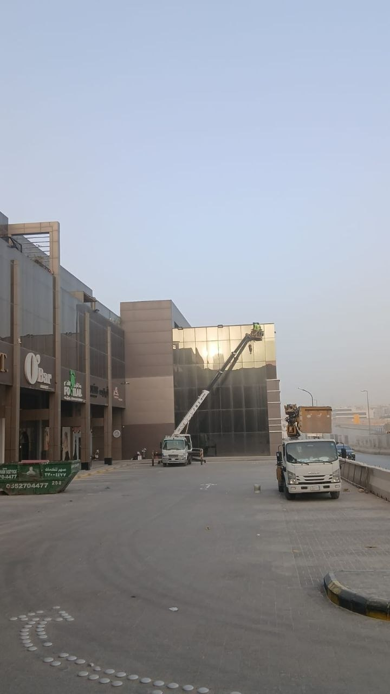

تتميز مدينة الرياض بالعدد الكبير من الأبراج والمباني الشاهقة التي تحتاج إلى صيانة دورية لواجهاتها الزجاجية، ولا يمكن الوصول إلى هذه الارتفاعات بالطرق التقليدية، ولهذا تعتمد شركة تنظيف واجهات بالكرابل على فرق مدربة تنزل من أعلى المبنى باستخدام حبال وأحزمة أمان معتمدة دولياً للوصول إلى كل نقطة في الواجهة مهما كان ارتفاعها.
وتُعد هذه التقنية من أكثر الطرق أماناً وكفاءة لتنظيف الأبراج السكنية والتجارية، حيث توفر شركة تنظيف واجهات بالكرابل حلاً عملياً يغني عن الحاجة إلى سقالات ثابتة أو رافعات ضخمة قد يصعب توفيرها في بعض المواقع الضيقة وسط المدينة.
ومن هذا المنطلق تقدم شركة حلول وتميز للتنظيف بالرياض خدمة متكاملة لتنظيف الواجهات بالكرابل، بالاعتماد على فريق مدرب على أعلى معايير السلامة المهنية ومعدات معتمدة تضمن تنفيذ العمل بأمان تام على مختلف الارتفاعات.
وتُعتبر شركة حلول وتميز للتنظيف من الشركات القليلة في الرياض التي تجمع بين خبرة العمل على الارتفاعات وجودة التنظيف الاحترافي للزجاج والكلادينج والحجر، بما يجعلها خياراً موثوقاً لأصحاب الأبراج ومديري المرافق في مختلف أحياء العاصمة.

فريق حلول وتميز أثناء تنفيذ أعمال تنظيف واجهة برج زجاجي بتقنية الكرابل بالرياض
ما هي خدمة تنظيف الواجهات بالكرابل؟
يُقصد بهذه الخدمة تنظيف الواجهات الخارجية للمباني المرتفعة باستخدام تقنية الهبوط بالحبال، حيث ينزل العامل المدرب من أعلى سطح المبنى مثبتاً بحزام أمان مزدوج وحبلين منفصلين، ليتمكن من الوصول إلى كل جزء من الواجهة وتنظيفه بدقة عالية.
وتتيح خدمة تنظيف الواجهات بالكرابل الوصول إلى الأماكن التي يصعب على الرافعات أو السقالات الوصول إليها، مثل الزوايا الضيقة أو الواجهات المطلة على شوارع مزدحمة لا تسمح بوضع معدات ثقيلة أسفلها.
وتشمل خدمات شركة تنظيف واجهات بالكرابل التي تقدمها حلول وتميز:
- تنظيف الزجاج الخارجي للأبراج السكنية والتجارية
- تنظيف واجهات الكلادينج والألوميتال المرتفعة
- إزالة الغبار والأتربة المتراكمة على الواجهات
- تلميع الزجاج وإعادة لمعانه الطبيعي
- فحص دوري لحالة السيليكون والفواصل بين الألواح
ولهذا يعتمد الكثير من ملاك الأبراج في الرياض على شركة حلول وتميز للتنظيف لتنفيذ هذا النوع من الأعمال الدقيقة والحساسة التي تحتاج إلى خبرة طويلة في العمل على الارتفاعات.
متى تحتاج إلى شركة تنظيف واجهات بالكرابل؟
هناك عدة مؤشرات تدل على حاجة المبنى إلى الاستعانة بـ شركة تنظيف واجهات بالكرابل بدلاً من انتظار تراكم الأوساخ لفترة طويلة، ومنها:
ارتفاع المبنى عن أربعة طوابق
عندما يتجاوز ارتفاع المبنى الطوابق التي يمكن الوصول إليها بسلم عادي، تصبح تقنية الكرابل هي الحل الأنسب والأكثر أماناً.
عدم وجود مساحة كافية للرافعات
في الشوارع الضيقة أو المباني المحاطة بمبانٍ أخرى، لا يمكن استخدام رافعات هيدروليكية كبيرة، وهنا تتفوق هذه التقنية المتخصصة في تقديم حل بديل فعال.
الحاجة إلى صيانة دورية منتظمة
تحتاج الأبراج التجارية إلى تنظيف دوري كل بضعة أشهر للحفاظ على مظهرها أمام العملاء والزوار، وهو ما توفره شركة تنظيف واجهات بالكرابل بجدول زمني منتظم.
وجود بقع أو أضرار موضعية
عند ظهور بقع أو آثار تسرب مياه في نقطة معينة من الواجهة، يمكن لفريق فريق التنظيف بالكرابل الوصول إلى تلك النقطة تحديداً دون الحاجة لتغطية المبنى بالكامل.
خطوات تنفيذ خدمة تنظيف الواجهات بالكرابل
تعتمد شركة حلول وتميز للتنظيف على منهجية دقيقة ومدروسة عند تنفيذ أعمال التنظيف بالكرابل، بحيث يتم ضمان السلامة الكاملة للفريق وجودة النتيجة النهائية للواجهة. وتشمل خطوات شركة تنظيف واجهات بالكرابل ما يلي:
- معاينة المبنى وتحديد نقاط التثبيت الآمنة على السطح
- تركيب حبال الأمان الرئيسية والاحتياطية وفحصها بدقة
- ارتداء الفريق لمعدات السلامة الكاملة من أحزمة وخوذات وقفازات
- النزول التدريجي من أعلى المبنى مع تنظيف كل قسم من الواجهة
- استخدام محاليل ومساحات مخصصة للزجاج والكلادينج
- فحص نهائي للواجهة والتأكد من إزالة جميع الأتربة والبقع
وبهذه الخطوات المنظمة تضمن شركة حلول وتميز للتنظيف تسليم واجهة نظيفة بالكامل وخالية من أي أتربة أو بقع، مع الحفاظ التام على سلامة فريق العمل طوال مدة التنفيذ.
💡 ملاحظة مهمة: تعتمد شركة تنظيف واجهات بالكرابل على معدات معتمدة ومفحوصة دورياً، حيث يتم فحص الحبال والأحزمة قبل كل مهمة للتأكد من سلامتها الكاملة قبل بدء العمل على الارتفاع.
معدات وأدوات السلامة في التنظيف بالكرابل
تعتمد فريق العمل على مجموعة من المعدات المتخصصة التي تضمن سلامة الفريق أثناء العمل على الارتفاعات، وتشمل هذه المعدات:
حزام الأمان المزدوج
يستخدمه العامل مع نظامين منفصلين للتثبيت لضمان الأمان حتى في حال حدوث أي عطل بأحد النظامين.
حبال العمل والحبال الاحتياطية
حبال معتمدة دولياً تتحمل أوزاناً كبيرة وتُفحص بانتظام قبل كل استخدام لضمان متانتها.
الخوذة والقفازات الواقية
تحمي العامل من أي أجسام متساقطة وتوفر قبضة آمنة أثناء التنقل على الواجهة.
أدوات التنظيف المخصصة
ممسحات ومحاليل مخصصة للزجاج والكلادينج تضمن نظافة عالية دون خدش السطح.
وبفضل هذه المعدات المتخصصة، رسخت شركة حلول وتميز للتنظيف اسمها كإحدى أبرز شركات تنظيف واجهات بالكرابل التي يمكن الوثوق بها في تنفيذ أعمال الارتفاعات بأمان تام.
شركة تنظيف واجهات بالكرابل للأبراج والمولات التجارية
تحتاج الأبراج التجارية والمولات الكبيرة إلى شركة تنظيف واجهات بالكرابل تمتلك خبرة في التعامل مع المساحات الواسعة والواجهات المركبة من الزجاج والألوميتال معاً. وتشمل الخدمات المقدمة لهذا القطاع:
- تنظيف واجهات المولات التجارية الزجاجية
- تنظيف واجهات الأبراج المكتبية المرتفعة
- تنظيف اللوحات الإعلانية المثبتة على الواجهات
- الصيانة الدورية لواجهات الفنادق والمجمعات السكنية

استخدام رافعة هيدروليكية مع فريق حلول وتميز في تنظيف واجهة مجمع تجاري بالرياض
وفي بعض المشاريع التي لا تسمح طبيعتها بالعمل بالكرابل فقط، تستعين الفريق برافعات هيدروليكية مساندة للوصول إلى الأجزاء الصعبة، بما يضمن تغطية كاملة لجميع أجزاء الواجهة دون استثناء.
وتحرص شركة حلول وتميز للتنظيف على تنسيق مواعيد التنفيذ مع إدارة المبنى بما يتناسب مع أوقات الذروة وحركة الزوار، لتقليل أي تأثير على النشاط اليومي للمحلات والمكاتب داخل المبنى.
الفرق بين التنظيف بالكرابل والرافعات الهيدروليكية
| المعيار | تنظيف بالكرابل | الرافعات الهيدروليكية |
|---|---|---|
| المرونة في الوصول للزوايا | عالية جداً | محدودة في بعض النقاط |
| الحاجة لمساحة أرضية | غير مطلوبة تقريباً | تحتاج مساحة واسعة أسفل المبنى |
| تكلفة التنفيذ للمباني الشاهقة | أقل نسبياً | أعلى مع زيادة الارتفاع |
| سرعة التنفيذ | مناسبة للواجهات الكبيرة | أسرع للمساحات المحدودة القريبة من الأرض |
وبناءً على طبيعة كل مشروع، تقترح شركة تنظيف واجهات بالكرابل الحل الأنسب من حيث الأمان والتكلفة والوقت، وقد يتم أحياناً الجمع بين الطريقتين في المشروع الواحد لتحقيق أفضل تغطية ممكنة للواجهة.
عوامل تحديد سعر خدمة تنظيف الواجهات بالكرابل
تختلف تكلفة خدمة شركة تنظيف واجهات بالكرابل من مشروع لآخر بناءً على عدة عوامل رئيسية، ولهذا تحرص شركة حلول وتميز للتنظيف على معاينة الموقع ميدانياً قبل تحديد السعر النهائي بدقة.
- ارتفاع المبنى وعدد الطوابق المطلوب تنظيفها
- مساحة الواجهة الإجمالية ونوع المادة المستخدمة فيها (زجاج، كلادينج، حجر)
- درجة اتساخ الواجهة وحاجتها لمعالجة إضافية
- عدد أفراد الفريق ومدة التنفيذ المتوقعة
- مدى الحاجة لمعدات مساندة مثل الرافعات الهيدروليكية
وتوفر خدمة تنظيف الواجهات بالكرابل عروض أسعار واضحة بعد المعاينة المباشرة، مع الحرص على الشفافية الكاملة مع العميل قبل بدء التنفيذ، دون أي رسوم إضافية غير متوقعة بعد الاتفاق المبدئي.
مناطق تغطية خدمة تنظيف الواجهات بالكرابل بالرياض
تقدم شركة تنظيف واجهات بالكرابل خدماتها في جميع أحياء ومناطق العاصمة، حيث يغطي فريق حلول وتميز مناطق واسعة تشمل:
ويتيح هذا الانتشار الواسع لـ شركة حلول وتميز للتنظيف الاستجابة السريعة لطلبات أصحاب الأبراج ومديري المرافق في أي منطقة بالرياض، مع توفير فرق متخصصة قادرة على التعامل مع مشاريع متعددة في وقت واحد.
معايير اختيار الجهة المناسبة لتنظيف الواجهات بالكرابل
قبل التعاقد مع أي فريق لتنفيذ أعمال التنظيف على الارتفاعات، من المهم التأكد من عدة معايير أساسية تضمن سلامة التنفيذ وجودة النتيجة النهائية. وتحرص شركة حلول وتميز للتنظيف على توضيح هذه المعايير لعملائها قبل بدء أي مشروع:
- وجود تأمين ساري المفعول يغطي فريق العمل أثناء التنفيذ
- خبرة موثقة في تنفيذ مشاريع مشابهة على ارتفاعات مماثلة
- معدات وحبال حديثة تخضع للفحص الدوري المنتظم
- سجل تجاري رسمي وشفافية كاملة في التعاقد والأسعار
- تدريب مستمر لأفراد الفريق على أحدث تقنيات السلامة
ويساعد الاطلاع على هذه المعايير أصحاب الأبراج ومديري المرافق في اتخاذ قرار مدروس عند اختيار الجهة المناسبة، بدلاً من الاعتماد فقط على السعر الأقل الذي قد يخفي وراءه نقصاً في معدات السلامة أو خبرة الفريق المنفذ.
عقود الصيانة الدورية لواجهات الأبراج
بدلاً من انتظار تراكم الأتربة والأوساخ على الواجهة لفترة طويلة، يفضل الكثير من أصحاب الأبراج والمجمعات التجارية التعاقد بشكل سنوي أو نصف سنوي مع جهة متخصصة، بما يضمن الحفاظ على مظهر المبنى على مدار العام دون الحاجة لتنسيق مشروع جديد في كل مرة.
وتوفر شركة حلول وتميز للتنظيف عقود صيانة مرنة يتم تصميمها بناءً على طبيعة كل مبنى وعدد مرات التنظيف المطلوبة سنوياً، مع إمكانية جدولة الزيارات في أوقات مناسبة لا تؤثر على حركة السكان أو الزوار داخل المبنى. كما تشمل هذه العقود عادة فحصاً دورياً لحالة السيليكون والفواصل بين ألواح الزجاج والكلادينج، للتنبيه المبكر لأي مشكلة قد تحتاج إلى صيانة إنشائية منفصلة قبل أن تتفاقم وتتسبب في أضرار أكبر على المبنى.
لماذا يثق أصحاب الأبراج في فريق العمل؟
على مدار سنوات من العمل في مجال تنظيف الواجهات المرتفعة، اكتسب فريق شركة تنظيف واجهات بالكرابل خبرة عملية واسعة في التعامل مع مختلف أنواع المباني، بدءاً من الفلل المكونة من عدة طوابق وحتى الأبراج التجارية الشاهقة.
ويحرص الفريق على الالتزام الصارم بمعايير السلامة المهنية في كل مهمة، مع فحص دوري لجميع المعدات والحبال قبل بدء العمل، وعدم البدء في أي مهمة إلا بعد التأكد الكامل من سلامة نقاط التثبيت أعلى المبنى.
كما يوفر فريق شركة حلول وتميز للتنظيف تقارير دورية لإدارات المباني توضح حالة الواجهة وأي ملاحظات فنية قد تحتاج إلى متابعة، مثل تلف في السيليكون أو تسرب مياه بسيط، بما يساعد الإدارة على اتخاذ إجراءات وقائية مبكرة قبل تفاقم أي مشكلة.
ومن أبرز ما يميز التعامل مع الفريق أيضاً هو المرونة في تنسيق المواعيد بما يتناسب مع طبيعة كل مبنى، سواء كان مبنى سكنياً هادئاً أو برجاً تجارياً مزدحماً يحتاج إلى تنفيذ العمل في ساعات محددة لتجنب إزعاج السكان أو أصحاب المحلات.
الخاتمة
إذا كنت تدير برجاً سكنياً أو تجارياً في الرياض وتبحث عن شركة تنظيف واجهات بالكرابل تجمع بين الخبرة والسلامة والجودة، فإن شركة حلول وتميز للتنظيف توفر لك فريقاً مدرباً ومعدات معتمدة لتنفيذ العمل على أي ارتفاع بأمان تام.
وسواء كنت تحتاج إلى خدمة تنظيف الواجهات بالكرابل لتنفيذ مهمة تنظيف لمرة واحدة، أو تبحث عن عقد صيانة دورية يحافظ على مظهر مبناك على مدار العام، فإن فريق العمل يمتلك الخبرة والمعدات المناسبة لتحقيق أفضل النتائج.
وتجدر الإشارة إلى أن التخطيط المسبق لجدول الصيانة السنوي يوفر على أصحاب المباني الكثير من الوقت والجهد، حيث يمكن تحديد مواعيد التنظيف مسبقاً بما يتناسب مع فصول السنة المختلفة، فالفترة التي تعقب العواصف الترابية على سبيل المثال تحتاج عادة إلى تنظيف عاجل، بينما يمكن جدولة الصيانة الدورية المعتادة بمعدل ثابت كل ثلاثة أو ستة أشهر حسب طبيعة المبنى وموقعه.
كما ينصح الخبراء في مجال صيانة المباني بعدم الانتظار حتى تصبح الواجهة شديدة الاتساخ، لأن تراكم الأتربة لفترات طويلة قد يؤدي إلى التصاق الغبار بمواد اللاصق الموجودة حول ألواح الزجاج، مما يزيد من صعوبة التنظيف لاحقاً ويحتاج إلى وقت ومجهود أكبر لاستعادة المظهر الأصلي للواجهة. ولهذا فإن الصيانة الوقائية المنتظمة تُعد الخيار الأكثر توفيراً للتكلفة على المدى الطويل مقارنة بالتنظيف الشامل بعد فترات إهمال طويلة.
ولا يقتصر دور فريق العمل على تنظيف الزجاج فقط، بل يمتد أيضاً إلى فحص حالة الإطارات المعدنية والألوميتال المحيطة بالواجهة، والتأكد من عدم وجود صدأ أو تآكل قد يؤثر على الشكل العام للمبنى مستقبلاً. وفي حال ملاحظة أي تلف بسيط، يتم إبلاغ إدارة المبنى فوراً لاتخاذ القرار المناسب بشأن الصيانة، سواء بالتنسيق مع فريق التنظيف نفسه أو بالتواصل مع مقاول متخصص في أعمال الصيانة الإنشائية.
وتواصل شركة حلول وتميز للتنظيف تقديم خدماتها في جميع أحياء الرياض بالاعتماد على أحدث معدات السلامة وأساليب العمل الحديثة، بينما يواصل فريق شركة تنظيف واجهات بالكرابل تنفيذ مشاريع الأبراج والمولات والمجمعات السكنية باحترافية عالية ونتائج تمنح الواجهات مظهراً نظيفاً ولامعاً يعكس جودة المبنى وقيمته.
وفي النهاية، يبقى الاستثمار في خدمة متخصصة لتنظيف الواجهات المرتفعة خطوة ضرورية للحفاظ على قيمة العقار وسلامة القائمين على تنفيذها، بدلاً من المجازفة بطرق تقليدية غير آمنة على الارتفاعات. لمزيد من الاستفسارات أو لحجز موعد المعاينة، يمكن التواصل مباشرة عبر الاتصال أو الواتساب في أي وقت.
ويظل اختيار فريق مؤهل ومدرب على أعلى معايير السلامة هو الفيصل الحقيقي في نجاح أي مشروع تنظيف على الارتفاعات، بغض النظر عن حجم المبنى أو موقعه داخل الرياض. فالخبرة العملية المتراكمة على مدار سنوات تمكن الفريق من التعامل مع مختلف التحديات التي قد تظهر أثناء التنفيذ، مثل تغير الأحوال الجوية المفاجئ أو وجود عوائق إنشائية غير متوقعة في تصميم الواجهة، دون التأثير على جودة النتيجة النهائية أو التسبب في أي تأخير غير مبرر في الجدول الزمني المتفق عليه مسبقاً مع العميل.